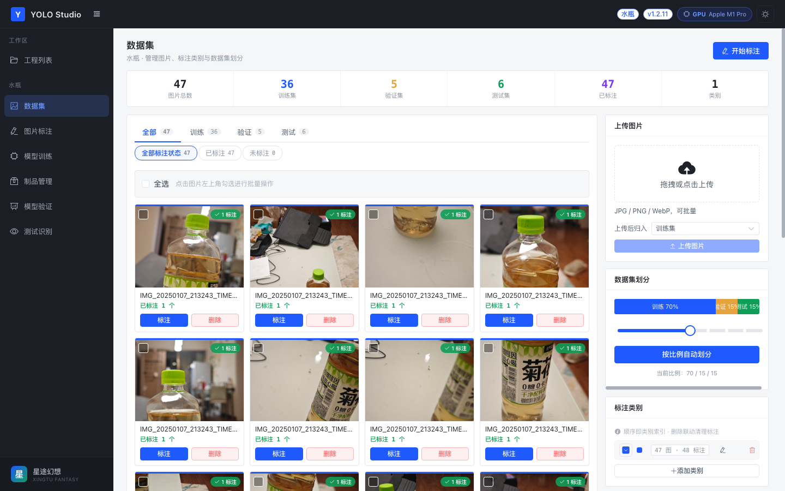
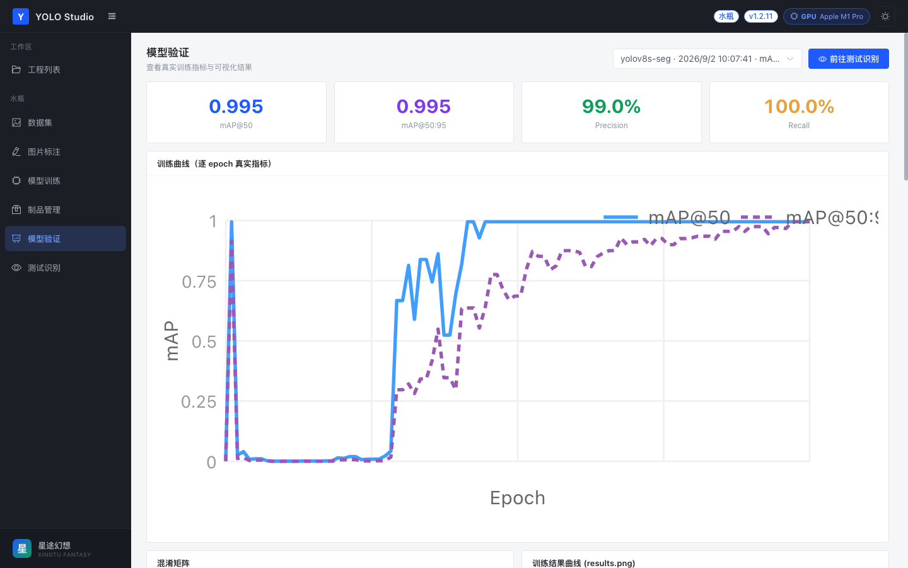

We open-sourced a local-first Roboflow alternative for teams that can't upload their images
Most computer-vision tools assume your images can go to the cloud. A lot of them can't. Factory floors, hospital basements, anything under an NDA, anything a customer contract says stays on the premises. The usual fallback is CVAT for labeling, a Jupyter notebook for training, and a spreadsheet to remember which weights came from which run. It works, but every new batch of images means re-assembling the pipeline by hand.
YOLO Studio is our attempt to put that pipeline back into one local app. It's MIT licensed, runs on your own machine, and covers the loop that actually matters: label → train → predict → label the next batch.
- Repo: github.com/cv936669367/yolo-studio
- Mirror (China): gitee.com/btdba/yolo-studio
What's in the box
YOLO Studio is a FastAPI backend plus a Vue 3 front end. No Docker, no cloud account, no license key. The first launch creates a data/ directory with the SQLite database, uploaded images, model weights and training outputs, and everything after that is local.
The parts that took the most work:
- Projects with a task type. You pick rectangle (object detection) or polygon (instance segmentation) up front, define your classes, and the rest of the app filters itself accordingly — a polygon project only offers
-segmodels at training time. - Labeling with real tools. Rectangles, a freehand lasso, polygons with per-vertex editing and 8-handle scaling, undo/redo, copy, and keyboard shortcuts for switching tools and classes.
- SAM-assisted labeling. Draw a box around an object and SAM finds the outline; or click positive points on the object and negative points on the background and watch the polygon refine before you commit it.
- Model-assisted labeling at two levels. A downloaded YOLO baseline can pre-label a batch using its own classes; once you've trained a version, that
best.ptcan pre-label the next batch with your classes. - Real training, not a mock. Training calls Ultralytics with your parameters and returns per-epoch metrics, curves, a confusion matrix and validation predictions.
- Version management. Every run gets its own record, weights, and artifacts, so you can compare two versions on the evaluation page instead of guessing which
best.ptis which. - Export.
best.pt, ONNX or TorchScript, straight out of the artifacts pane. - Tiled viewing for huge images. Any image with a side ≥ 5500 px is also served as 1024 px tiles plus a 2048 px preview, so you can zoom into a camera-sized photo while editing. The full image stays available; tiling is an overlay, not a replacement.
 A polygon produced by Smart Select, still fully editable — 120 points in this example. The UI is Chinese-first; more on that below.
A polygon produced by Smart Select, still fully editable — 120 points in this example. The UI is Chinese-first; more on that below.
The loop is the product
Single features are easy to copy. What's harder is making the output of one stage the input of the next, and that's the design constraint we kept coming back to.
You label a representative batch by hand. You train a first model. That model is now a labeling tool: run it over the next few hundred images, and it produces draft annotations — boxes for detection projects, polygons for segmentation projects — with a confidence threshold and an image range you choose. You fix what it got wrong, add what it missed, and train again. Each round moves human effort from drawing to reviewing, which is the only kind of speedup that survives contact with a messy dataset.

Filter to the unannotated images, pre-label them, then review.The same logic applies to SAM, but earlier in the process. SAM is very good at "where is the edge of the thing you pointed at" and useless at "what is this thing". So YOLO Studio uses it strictly as a geometry tool: you supply the location prompt (a box, or positive/negative clicks), SAM supplies the mask, the app converts that mask into a normalized polygon, and you supply the class and the final correction. A box prompt is a good fit for objects with a clean boundary; positive/negative points are better when the object touches similar-coloured background and the box would drag extra pixels in.
 Epochs, image size, batch size, learning rate, optimizer, early stopping, augmentation. These are passed to Ultralytics, not just displayed.
Epochs, image size, batch size, learning rate, optimizer, early stopping, augmentation. These are passed to Ultralytics, not just displayed.
What it is not
This is a v1 from a small team, and the honest list is more useful than the feature list:
- The UI is Chinese-only. There's no i18n layer yet; strings live in the Vue components. Localizing it is the most obvious first contribution and we'd take that PR gladly.
- Training device selection is MPS or CPU. The code checks for Apple Silicon's MPS backend and otherwise falls back to CPU. There is no CUDA branch today — if you're on an NVIDIA box you can train, but not with GPU acceleration through this app.
- The dependency is pinned to
ultralytics==8.3.0. The model list includes newer families, but whether a given weight loads depends on the installed Ultralytics version. Start with YOLOv8 and work outward. - It is single-user and has no auth. It's a local workbench, not a multi-tenant service. Don't expose it to a network you don't control.
- Evaluation metrics shown are box metrics. For segmentation projects, look at mask metrics and the actual contour quality as well.
- Pre-labeling with a baseline matches class names literally. A COCO
bottledoesn't automatically match your class calleddrinks. Your own trained model doesn't have this problem, which is why the second round gets better.
We'd rather list those than have you find them after an afternoon of setup.
Running it
# backend
cd backend
python -m venv venv && source venv/bin/activate
pip install -r requirements.txt
uvicorn main:app --reload --port 8000
# frontend (second terminal)
cd frontend
npm install
npm run dev
Then open http://localhost:3000. Python 3.9+ and Node 18+. You'll download the SAM weights (~375 MB) and any baseline YOLO weights from inside the app on first use; the app tries a few mirrors and falls back to the official source.

Metrics are read from each run's own results, so versions stay comparable.Why we built it this way
Two constraints shaped most of the decisions.
The first was that the data doesn't move. Once you accept that, "local-first" stops being a marketing word and becomes an architecture: SQLite instead of Postgres, files on disk instead of object storage, a single process instead of a queue. It also means the app can be audited — you can read every table and every file it writes.
The second was that the people labeling aren't always the people who own the GPU. A workbench that assumes a terminal, a conda environment and a YAML file excludes most of the people who actually know what the objects in the photos are. The training page exposes the parameters, but it also refuses to start a run with a model that hasn't finished downloading, and it keeps the run history visible.
We also ship a Chinese download mirror setup because github.com release assets are unreliable from mainland China, which is where most of our users are. That's a localization detail, not a security claim: the app prefers a mirror and falls back to the official URL.
Try it
git clone https://github.com/cv936669367/yolo-studio
If you have a folder of images and a class list, you can be at "first trained model" without leaving the browser. If you try it and something breaks, an issue with your OS, Python version and the failing step is genuinely useful — that's how the limitations list above gets shorter.
And if you're the person who would translate the UI, the repo is MIT and the offer stands.
YOLO Studio is built by Xinjiang Xingtuhuanxiang Network Technology Co., Ltd. (星途幻想) in Xinjiang, China. Ultralytics and SAM have their own licenses; check them before commercial deployment.